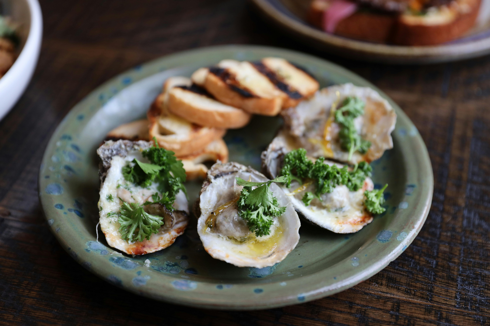
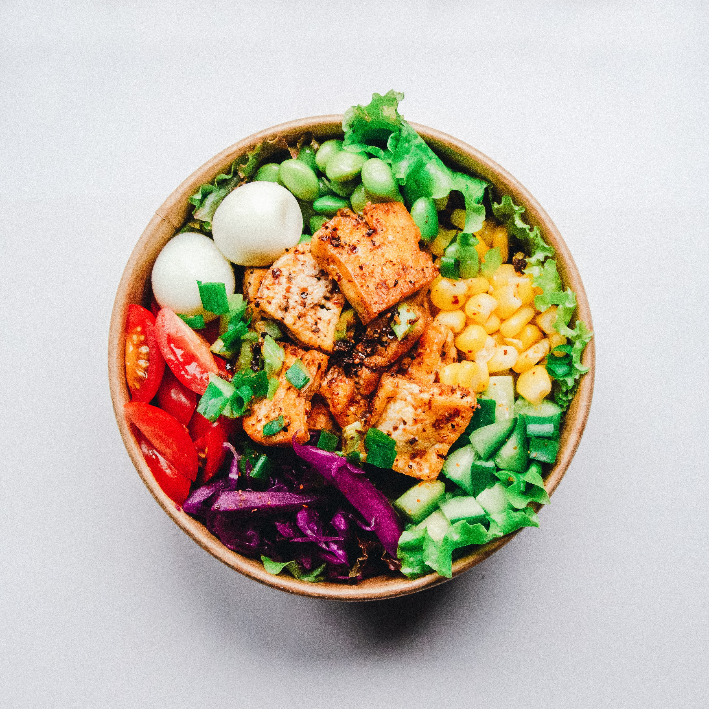
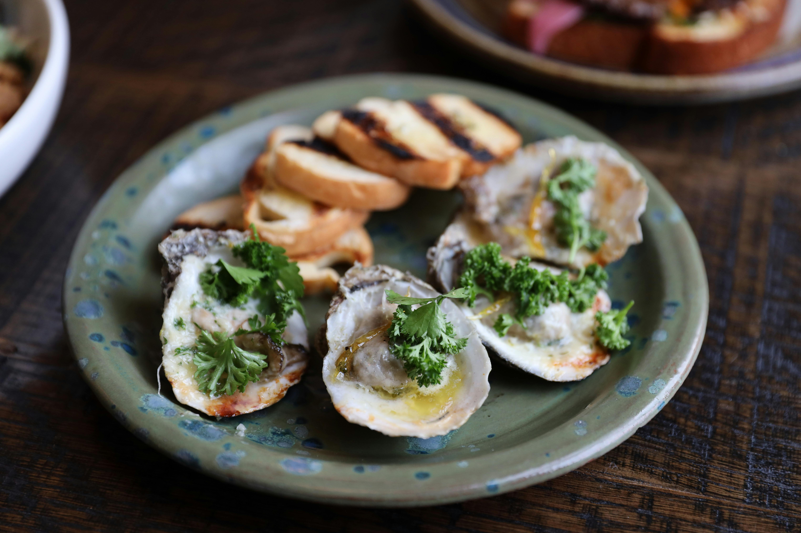
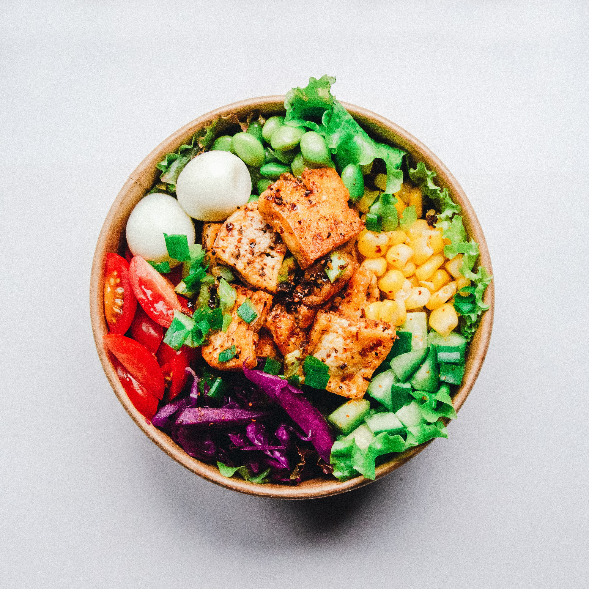

Marco Bellissimo
Welcome to the Culinary World of Marco Bellissimo, where passion meets perfection on every plate.
Join us in savoring the artistry of Marco Bellissimo— a culinary experience that goes beyond the extraordinary.
LOCAL. FRESH. REAL.
Welcome to the Culinary World of Marco Bellissimo, where passion meets perfection on every plate.
Join us in savoring the artistry of Marco Bellissimo— a culinary experience that goes beyond the extraordinary.
LOCAL. FRESH. REAL.
Hello and Bon Appétit!
Hello I'm Marco Bellissimo, your passport to a world of exquisite flavors and culinary delights. As a passionate personal chef, I bring a symphony of tastes and a touch of elegance to your dining experience. I'm not just a chef; I'm an artist in the kitchen, crafting each dish with precision and love. My culinary journey began in the enchanting kitchens of Italy, where I cultivated a deep appreciation for
fresh, seasonal ingredients and the art of slow cooking. Over the years, my expertise has evolved, blending traditional techniques with modern flair.
Now, I'm proud to call Louisville, KY, home—a city that has warmly embraced my love for fine dining. Nestled in the heart of the Bluegrass State, Louisville has become the backdrop for my culinary adventures. The vibrant local food scene, combined with the warm hospitality of the community, has infused new inspiration into my creations. From the Kentucky Derby spirit to the rich cultural tapestry, Louisville's influence is unmistakable in the dishes I craft.
Embark on a sumptuous visual journey through the lens of Marco Bellissimo's culinary creations in our captivating picture gallery. Each image is a meticulously curated glimpse into the artistry, innovation, and passion that define my culinary world. Here, we invite you to immerse yourself in a kaleidoscope of colors, textures, and flavors, each photograph telling a unique story of culinary craftsmanship and dedication.
 




Step into the world of Marco Bellissimo through the eyes and taste buds of our delighted patrons. Our customer reviews reflect the resounding applause for Marco's culinary artistry and commitment to delivering exceptional dining experiences. Here's what our cherished customers have to say about their gastronomic adventures with Marco:
.svg)
.svg)
.svg)
.svg)